Code
pacman::p_load(sf, tmap, tidyverse, lubridate, dplyr, sfdep, Kendall)Dengue Hemorrhagic Fever (in short dengue fever) is one of the most widespread mosquito-borne diseases in the most tropical and subtropical regions. It is an acute disease caused by dengue virus infection which is transmitted by female Aedes aegypti and Aedes albopictus mosquitoes. In 2015, Taiwan had recorded the most severe dengue fever outbreak with more than 43,000 dengue cases and 228 deaths. Since then, the annual reported dengue fever cases were maintained at the level of not more than 200 cases. However, in 2023, Taiwan recorded 26703 dengue fever cases. Figure below reveals that more than 25,000 cases were reported at Tainan City.
As a curious geospatial analytics green horn, you are interested to discover:
if the distribution of dengue fever outbreak at Tainan City, Taiwan are independent from space and space and time. If the outbreak is indeed spatial and spatio-temporal dependent, then, you would like to detect where are the clusters and outliers, and the emerging hot spot/cold spot areas.
The specific tasks of this take-home exercise are as follows:
Using appropriate function of sf and tidyverse, preparing the following geospatial data layer:
a study area layer in sf polygon features. It must be at village level and confined to the D01, D02, D04, D06, D07, D08, D32 and D39 counties of Tainan City, Taiwan.
a dengue fever layer within the study area in sf point features. The dengue fever cases should be confined to epidemiology week 31-50, 2023.
a derived dengue fever layer in spacetime s3 class of sfdep. It should contain, among many other useful information,
a data field showing number of dengue fever cases by village and by epidemiology week.
Using the extracted data, perform global spatial autocorrelation analysis by using sfdep methods.
Using the extracted data, perform local spatial autocorrelation analysis by using sfdep methods.
Using the extracted data, perform emerging hotspot analysis by using sfdep methods.
Describe the spatial patterns revealed by the analysis above.
Packages Used:
sf: For importing, managing, and processing geospatial data.
tidyverse: Collection of packages for data science tasks.
tmap: For creating thematic maps, such as choropleth and bubble maps.
sfdep: Creating an sf and tidyverse friendly interface.
Kendall: To perform Mann Kendall test on Gi*
lubridate: For working with dates and times.
dplyr: For data manipulation.
pacman::p_load(sf, tmap, tidyverse, lubridate, dplyr, sfdep, Kendall)We begin first by working with dengue (Aspatial) data as aspatial data usually requires more wrangling.
dengue <- read_csv("data/aspatial/Dengue_Daily.csv")head(dengue)glimpse(dengue)From viewing the head of dengue, we can see that the data contains “None” values in x and y coordinates. We’ll remove them using the filter function from dplyr.
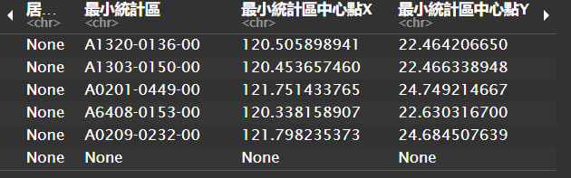
dengue <- dengue %>% filter(最小統計區中心點X != "None" | 最小統計區中心點Y != "None")Since the task confines us to the epidemiology week 31-50, 2023, we’ll filter the data to only include the specified weeks.
dengue <- dengue %>% filter(year(發病日) == 2023) %>% filter(epiweek(發病日) >=31 & epiweek(發病日)<= 50)From there, we’ll filter the columns to select what we’ll be using later on.
df <- dengue %>%
select("發病日", "最小統計區中心點X", "最小統計區中心點Y")Rename the columns to english to make it easier to read. We’ll use names() from base R to rename the columns.
names(df) <- c("onset-date", "x-coordinate","y-coordinate")Once we are satisfied with our aspatial data, let’s import our geospatial data.
tainan <- st_read(dsn = "data/geospatial",
layer = "TAINAN_VILLAGE")glimpse(tainan)Since we’ll need to combine the dengue data with the tainan data, we’ll need to ensure that the coordinate reference system (CRS) of both datasets are the same. We’ll use st_crs() to check the CRS of the tainan data.
st_crs(tainan)Check if there are any invalid values in the tainan data using st_is_valid().
length(which(st_is_valid(tainan) == FALSE))Once it’s done, we’ll convert our aspatial dataset into a spatial dataset using st_as_sf().
dengue_sf <- st_as_sf(df,
coords = c("x-coordinate","y-coordinate"),
crs = 3824)We are also confining our tainan data set to the specified villages.
villages <- c("D01", "D02", "D04", "D06", "D07", "D08", "D32", "D39")tainan_vil <- tainan %>%
filter(TOWNID %in% villages)Once that is done, let’s combine the datasets together and see the dengue cases for the specified villages. We’ll use st_join() to join the datasets.
selected_dengue <- dengue_sf %>% st_join(tainan_vil, join = st_within)Remove rows where TOWNID is NA
selected_dengue <- selected_dengue %>% filter(!is.na(TOWNID))overall_dengue <- st_intersection(dengue_sf, tainan_vil)Once we are satisfied with our data wrangling, we’ll save the datasets into rds files for future use.
saveRDS(overall_dengue, "data/rds/overall_dengue.rds")
saveRDS(tainan_vil, "data/rds/tainan_vil.rds")overall_dengue <- readRDS("data/rds/overall_dengue.rds")
tainan_vil <- readRDS("data/rds/tainan_vil.rds")plot(st_geometry(tainan_vil), col = "grey")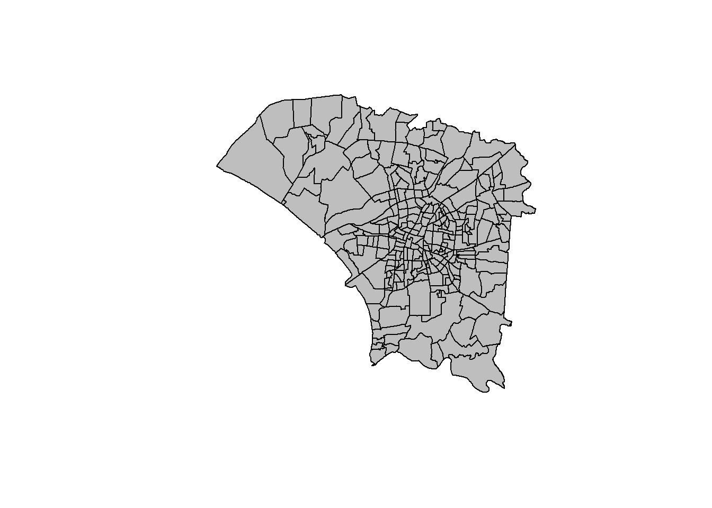
plot(st_geometry(overall_dengue), col = "grey")
plot(st_geometry(tainan_vil), add = TRUE)
From here, we can identify the rough distribution of dengue cases in tainan. We notice that majority of the cases are occuring in the middle segments of tainan.
dengue_sf <- st_join(tainan_vil, overall_dengue, join = st_contains)dengue_sf <- dengue_sf %>% select(VILLENG.x, TOWNID.x, onset.date, geometry,week) %>% rename(VILLENG = VILLENG.x) %>% rename(TOWNID = TOWNID.x) %>% rename(onset_date = onset.date)we’ll attempt to group by both villeng and townid first then villeng by itself. This section will be explained later on.
dengue_agg <- st_join(tainan_vil, dengue_sf, join = st_contains) %>% group_by (VILLENG.x, TOWNID.x) %>% summarize(total_cases= n())dengue_agg2 <- st_join(tainan_vil, dengue_sf, join = st_contains) %>% group_by (VILLENG.x) %>% summarize(total_cases= n())Let’s save our results for future work.
saveRDS(dengue_agg, "data/rds/dengue_agg.rds")
saveRDS(dengue_agg2, "data/rds/dengue_agg2.rds")dengue_agg <- readRDS("data/rds/dengue_agg.rds")
dengue_agg2 <- readRDS("data/rds/dengue_agg2.rds")tm_shape(dengue_agg2) +
tm_polygons("total_cases") +
tm_layout(main.title = "Number of dengue cases by Village",
main.title.position = "center",
main.title.size = 1.0,
legend.height = 0.45,
legend.width=0.35,
frame = TRUE) +
tm_borders(alpha=0.5)+
tm_compass(type="8star", size = 2) +
tm_scale_bar() +
tm_grid(alpha =0.2)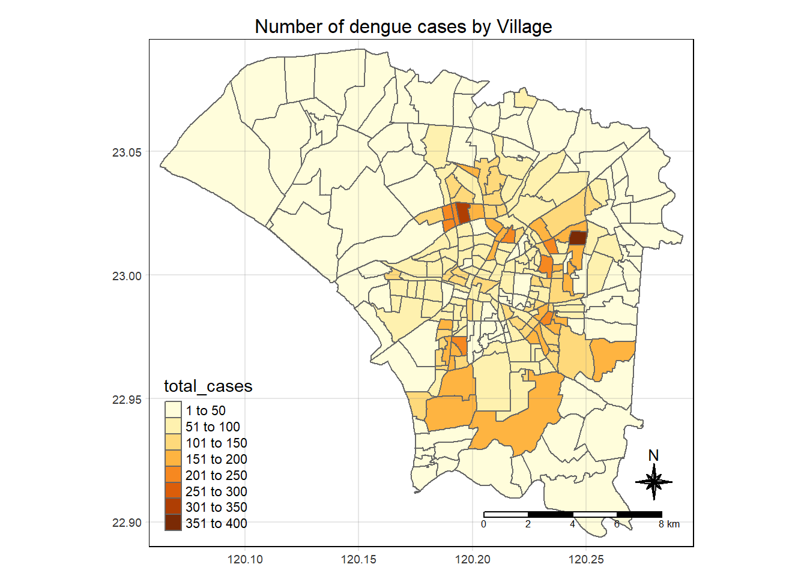
Grouping VillEng by itself, we can identify a few spots where dengue cases are more prevalent.
We will then plot a bar chart to show the distribution of dengue cases in each village.
ggplot(dengue_agg, aes(x = TOWNID.x, y = total_cases)) +
geom_bar(stat = "identity", position = "dodge") +
theme_minimal() +
theme(axis.text.x = element_text(angle = 90, vjust = 0.5, hjust=1)) +
labs(title = "Dengue cases in Tainan",
x = "Village",
y = "Number of cases")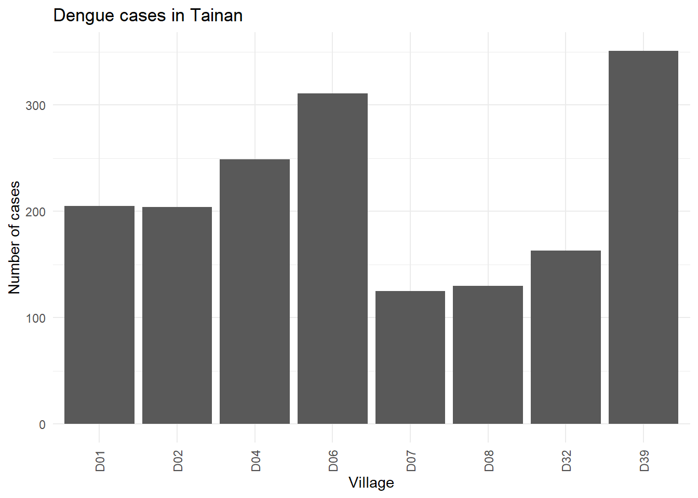
From the chart above, we can notice that village D07, D08 and D32 have the lowest number of dengue cases. Meanwhile, D06 and D39 has the highest.
dengue_agg_sf <- dengue_agg %>% select(VILLENG.x, total_cases, geometry) %>% rename(VILLENG = VILLENG.x)dengue_count <- dengue_agg_sfdengue_countSimple feature collection with 258 features and 2 fields
Geometry type: POLYGON
Dimension: XY
Bounding box: xmin: 120.0627 ymin: 22.89401 xmax: 120.2925 ymax: 23.09144
Geodetic CRS: TWD97
# A tibble: 258 × 3
# Groups: VILLENG [249]
VILLENG total_cases geometry
<chr> <int> <POLYGON [°]>
1 Andong Vil. 67 ((120.2164 23.0404, 120.2154 23.04033, 120.2153 23.0…
2 Anfu Vil. 311 ((120.1932 23.0294, 120.1929 23.02938, 120.1926 23.0…
3 Anhe Vil. 73 ((120.2258 23.04424, 120.2219 23.03862, 120.2219 23.…
4 Ankang Vil. 97 ((120.2269 23.01413, 120.2274 23.01331, 120.2277 23.…
5 Anqing Vil. 111 ((120.2113 23.04414, 120.2111 23.04413, 120.2108 23.…
6 Anshun Vil. 34 ((120.2136 23.05601, 120.2136 23.05586, 120.2135 23.…
7 Anxi Vil. 110 ((120.2123 23.03689, 120.212 23.03685, 120.2121 23.0…
8 Bao'an Vil. 19 ((120.2304 22.93544, 120.2301 22.93511, 120.2301 22.…
9 Beihua Vil. 82 ((120.2034 23.00257, 120.2032 23.0022, 120.2028 23.0…
10 Beimen Vil. 249 ((120.2176 23.02032, 120.2173 23.02013, 120.2172 23.…
# ℹ 248 more rowsunique(dengue_count$VILLENG) [1] "Andong Vil." "Anfu Vil." "Anhe Vil." "Ankang Vil."
[5] "Anqing Vil." "Anshun Vil." "Anxi Vil." "Bao'an Vil."
[9] "Beihua Vil." "Beimen Vil." "Beiwan Vil." "Beixing Vil."
[13] "Budai Vil." "Chang'an Vil." "Chengbei Vil." "Chengda Vil."
[17] "Chengde Vil." "Chengdong Vil." "Chenggong Vil." "Chenghuang Vil."
[21] "Chengnan Vil." "Chengxi Vil." "Chengzhong Vil." "Chihkan Vil."
[25] "Chongcheng Vil." "Chongde Vil." "Chonghui Vil." "Chongming Vil."
[29] "Chongshan Vil." "Chongwen Vil." "Chongxin Vil." "Chongxue Vil."
[33] "Da'an Vil." "Da'en Vil." "Dacheng Vil." "Dade Vil."
[37] "Dafeng Vil." "Dafu Vil." "Dagang Vil." "Daguang Vil."
[41] "Dahe Vil." "Dajia Vil." "Daliang Vil." "Dalin Vil."
[45] "Daqiao Vil." "Datong Vil." "Dawan Vil." "Daxing Vil."
[49] "Daxue Vil." "Dazhi Vil." "Dazhong Vil." "Degao Vil."
[53] "Deguang Vil." "Diandong Vil." "Dianxi Vil." "Ding'an Vil."
[57] "Dong'an Vil." "Dongguang Vil." "Donghe Vil." "Dongmen Vil."
[61] "Dongming Vil." "Dongqiao Vil." "Dongsheng Vil." "Dongwan Vil."
[65] "Dongxing Vil." "Dongzhi Vil." "Duiyue Vil." "Erwang Vil."
[69] "Erxing Vil." "Fahua Vil." "Fenghuang Vil." "Fotan Vil."
[73] "Fude Vil." "Fuguo Vil." "Fuhua Vil." "Funan Vil."
[77] "Fuqian Vil." "Fuqiang Vil." "Fuxing Vil." "Fuyu Vil."
[81] "Gongqin Vil." "Gongwen Vil." "Gongyuan Vil." "Guangfu Vil."
[85] "Guangming Vil." "Guangxian Vil." "Guangzhou Vil." "Guansheng Vil."
[89] "Guo'an Vil." "Guoping Vil." "Guozhai Vil." "Haidian Vil."
[93] "Haidong Vil." "Hainan Vil." "Haixi Vil." "Heping Vil."
[97] "Heshun Vil." "Hexing Vil." "Houbi Vil." "Houjia Vil."
[101] "Huade Vil." "Huaping Vil." "Huwei Vil." "Jiading Vil."
[105] "Jianguo Vil." "Jiannan Vil." "Jianping Vil." "Jincheng Vil."
[109] "Jinhua Vil." "Junnan Vil." "Junwang Vil." "Kainan Vil."
[113] "Kaishan Vil." "Kaiyuan Vil." "Kunshan Vil." "Kunshen Vil."
[117] "Liren Vil." "Liuhe Vil." "Lixiang Vil." "Lixing Vil."
[121] "Longpu Vil." "Longshan Vil." "Longtan Vil." "Lu'er Vil."
[125] "Ludong Vil." "Meihua Vil." "Mingde Vil." "Mingliang Vil."
[129] "Mingxing Vil." "Nanchang Vil." "Nandou Vil." "Nanhua Vil."
[133] "Nanmei Vil." "Nanmen Vil." "Nansheng Vil." "Nanwan Vil."
[137] "Nanxing Vil." "Niaosong Vil." "Ping'an Vil." "Pingtong Vil."
[141] "Puyuan Vil." "Qiancao Vil." "Qingcao Vil." "Quannan Vil."
[145] "Ren'ai Vil." "Rende Vil." "Renhe Vil." "Renyi Vil."
[149] "Sanhe Vil." "Sanmin Vil." "Shalun Vil." "Shangding Vil."
[153] "Shanglun Vil." "Shenggong Vil." "Shengli Vil." "Shenzhou Vil."
[157] "Shuang'an Vil." "Sicao Vil." "Song'an Vil." "Taizi Vil."
[161] "Tianfei Vil." "Tianliao Vil." "Tong'an Vil." "Tuku Vil."
[165] "Wangcheng Vil." "Wangliao Vil." "Wangxing Vil." "Weiguo Vil."
[169] "Weixia Vil." "Wencheng Vil." "Wenhua Vil." "Wennan Vil."
[173] "Wenping Vil." "Wensheng Vil." "Wenxian Vil." "Wenyuan Vil."
[177] "Wutiaogang Vil." "Wuwang Vil." "Wuzhu Vil." "Xianbei Vil."
[181] "Xiangong Vil." "Xiaobei Vil." "Xiaodong Vil." "Xiaoximen Vil."
[185] "Xibei Vil." "Xiding Vil." "Xidong Vil." "Xihe Vil."
[189] "Xihu Vil." "Xinan Vil." "Xinchang Vil." "Xindong Vil."
[193] "Xingfu Vil." "Xingnong Vil." "Xinsheng Vil." "Xinshu Vil."
[197] "Xinshun Vil." "Xintian Vil." "Xinxing Vil." "Xiqi Vil."
[201] "Xiqiao Vil." "Xishi Vil." "Xiwan Vil." "Xixian Vil."
[205] "Xixin Vil." "Xuedong Vil." "Yancheng Vil." "Yantian Vil."
[209] "Yanxing Vil." "Yanxing Vil." "Yanzhou Vil." "Yaowang Vil."
[213] "Yijia Vil." "Yiping Vil." "Yizai Vil." "Yonghua Vil."
[217] "Yongkang Vil." "Yongming Vil." "Yongning Vil." "Yongxiang Vil."
[221] "Yuanbao Vil." "Yuandian Vil." "Yuandong Vil." "Yuanmei Vil."
[225] "Yuanxi Vil." "Yuanzhong Vil." "Yuguang Vil." "Yunong Vil."
[229] "Yuping Vil." "Yusheng Vil." "Zaixing Vil." "Zhangnan Vil."
[233] "Zhangsheng Vil." "Zhangxing Vil." "Zhengjue Vil." "Zhengqiang Vil."
[237] "Zhenxing Vil." "Zhonghua Vil." "Zhonglou Vil." "Zhongxi Vil."
[241] "Zhongxiao Vil." "Zhongxing Vil." "Zhongzhou Vil." "Zhoubei Vil."
[245] "Zhounan Vil." "Zhuangjing Vil." "Zhuxi Vil." "Ziqiang Vil."
[249] "Zongtou Vil." When viewing the unique values of villeng, we notice that there are duplicates in the dataset. We use the function cat() to print the number of unique villages, total features, and any duplicate values.
# Count the number of unique values in the VILLENG column
num_unique_villages <- length(unique(dengue_count$VILLENG))
# Count the total number of features (polygons) in the dataset
total_features <- nrow(dengue_count)
# Check for duplicate values in the VILLENG column
duplicate_villages <- dengue_count %>%
group_by(VILLENG) %>%
filter(n() > 1) %>%
distinct()
# Print the number of unique villages, total features, and any duplicate values
cat("Number of unique villages:", num_unique_villages, "\n")Number of unique villages: 249 cat("Total features (polygons):", total_features, "\n")Total features (polygons): 258 cat("Duplicate villages:", nrow(duplicate_villages), "\n")Duplicate villages: 17 duplicate_villages Simple feature collection with 17 features and 2 fields
Geometry type: POLYGON
Dimension: XY
Bounding box: xmin: 120.1705 ymin: 22.9264 xmax: 120.2458 ymax: 23.07585
Geodetic CRS: TWD97
# A tibble: 17 × 3
# Groups: VILLENG [8]
VILLENG total_cases geometry
<chr> <int> <POLYGON [°]>
1 Chenggong Vil. 84 ((120.2094 23.02295, 120.2088 23.02294, 120.2081 …
2 Chenggong Vil. 62 ((120.2247 22.96165, 120.2247 22.96165, 120.2246 …
3 Chenggong Vil. 32 ((120.2388 23.00454, 120.2388 23.00452, 120.2385 …
4 Fuxing Vil. 139 ((120.2373 22.98504, 120.237 22.98501, 120.2361 2…
5 Fuxing Vil. 61 ((120.2433 23.00544, 120.2432 23.00544, 120.2427 …
6 Ren'ai Vil. 78 ((120.2248 23.0057, 120.2243 23.00504, 120.2242 2…
7 Ren'ai Vil. 17 ((120.2214 22.96205, 120.2213 22.96203, 120.2211 …
8 Renhe Vil. 103 ((120.2361 22.96897, 120.2367 22.969, 120.2371 22…
9 Renhe Vil. 9 ((120.2233 22.96183, 120.2233 22.96183, 120.2233 …
10 Wennan Vil. 81 ((120.1866 22.98634, 120.1865 22.98631, 120.1862 …
11 Wennan Vil. 18 ((120.2226 23.07585, 120.2225 23.07582, 120.2225 …
12 Xibei Vil. 17 ((120.1706 22.95257, 120.1706 22.95249, 120.1706 …
13 Xibei Vil. 91 ((120.214 23.02902, 120.2135 23.02874, 120.2132 2…
14 Xidong Vil. 21 ((120.2015 22.95139, 120.1987 22.95137, 120.1983 …
15 Xidong Vil. 167 ((120.1987 23.029, 120.1987 23.02896, 120.1988 23…
16 Zhongxing Vil. 26 ((120.2262 23.00712, 120.2261 23.006, 120.2258 23…
17 Zhongxing Vil. 51 ((120.2417 23.00886, 120.2416 23.00883, 120.2416 …From there, we realise that dengue_agg itself has duplicates. We then will use dengue_agg2 to perform the global spatial autocorrelation analysis. We’ll keep dengue_agg for future use.
wm_q <- dengue_agg2 %>%
mutate(
nb = st_contiguity(geometry, queen = TRUE),
wt = st_weights(nb, style = "W", allow_zero = TRUE)
)wm_qSimple feature collection with 249 features and 4 fields
Geometry type: GEOMETRY
Dimension: XY
Bounding box: xmin: 120.0627 ymin: 22.89401 xmax: 120.2925 ymax: 23.09144
Geodetic CRS: TWD97
# A tibble: 249 × 5
VILLENG.x total_cases geometry nb wt
* <chr> <int> <POLYGON [°]> <nb> <lis>
1 Andong Vil. 67 ((120.2164 23.0404, 120.2154 23.04033, 1… <int> <dbl>
2 Anfu Vil. 311 ((120.1932 23.0294, 120.1929 23.02938, 1… <int> <dbl>
3 Anhe Vil. 73 ((120.2258 23.04424, 120.2219 23.03862, … <int> <dbl>
4 Ankang Vil. 97 ((120.2269 23.01413, 120.2274 23.01331, … <int> <dbl>
5 Anqing Vil. 111 ((120.2113 23.04414, 120.2111 23.04413, … <int> <dbl>
6 Anshun Vil. 34 ((120.2136 23.05601, 120.2136 23.05586, … <int> <dbl>
7 Anxi Vil. 110 ((120.2123 23.03689, 120.212 23.03685, 1… <int> <dbl>
8 Bao'an Vil. 19 ((120.2304 22.93544, 120.2301 22.93511, … <int> <dbl>
9 Beihua Vil. 82 ((120.2034 23.00257, 120.2032 23.0022, 1… <int> <dbl>
10 Beimen Vil. 249 ((120.2176 23.02032, 120.2173 23.02013, … <int> <dbl>
# ℹ 239 more rowsglobal_moran_test(wm_q$total_cases,
wm_q$nb,
wm_q$wt)
Moran I test under randomisation
data: x
weights: listw
Moran I statistic standard deviate = 12.062, p-value < 2.2e-16
alternative hypothesis: greater
sample estimates:
Moran I statistic Expectation Variance
0.440989474 -0.004032258 0.001361217 In R, the set.seed() function is used to set the seed for random number generation. It ensures reproducibility in simulations or any other random number-dependent operations by initializing the random number generator to a specified starting point.
set.seed(1234)global_moran_perm(wm_q$total_cases,
wm_q$nb,
wm_q$wt,
nsim=49)
Monte-Carlo simulation of Moran I
data: x
weights: listw
number of simulations + 1: 50
statistic = 0.44099, observed rank = 50, p-value < 2.2e-16
alternative hypothesis: two.sidedSince our permutation statistics return 0.44, it signifies that there are forms of clustering present in the dataset.
computing lisa
lisa <- wm_q %>% mutate(local_moran = local_moran(
total_cases, nb, wt, nsim = 79),
.before = 1) %>%
unnest(local_moran)tm_shape(lisa) +
tm_fill("ii") +
tm_borders(alpha=0.5) +
tm_layout(main.title = "Local Moran's I of Total Cases",
main.title.size = 0.8)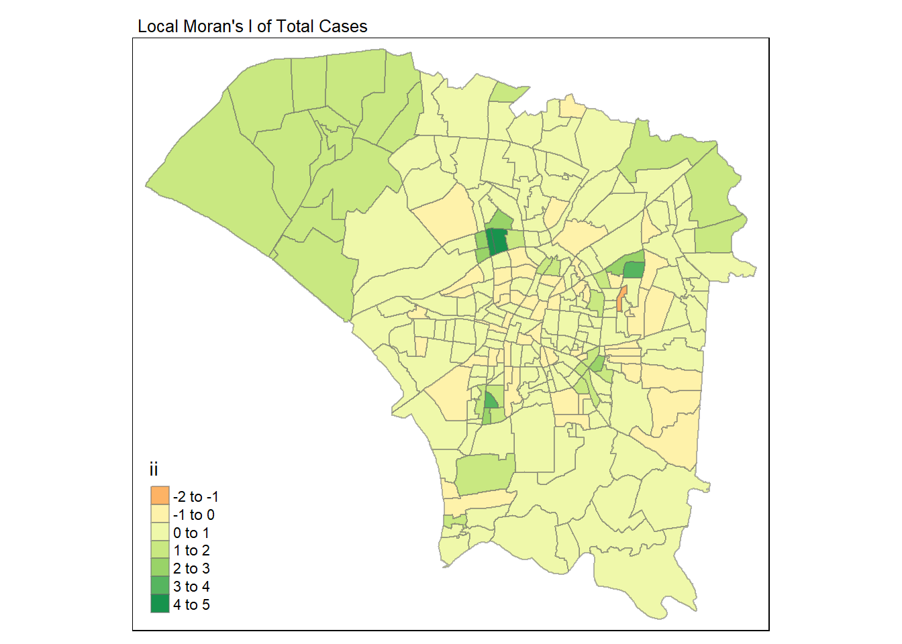
tm_shape(lisa) +
tm_fill("p_ii_sim",
breaks = c(0, 0.001, 0.01, 0.05, 1),
labels = c("0.001", "0.01", "0.05", "Not significant")) +
tm_borders(alpha = 0.5) +
tm_layout (main.title = "p-value of local Moran's I",
main.title.size = 0.8)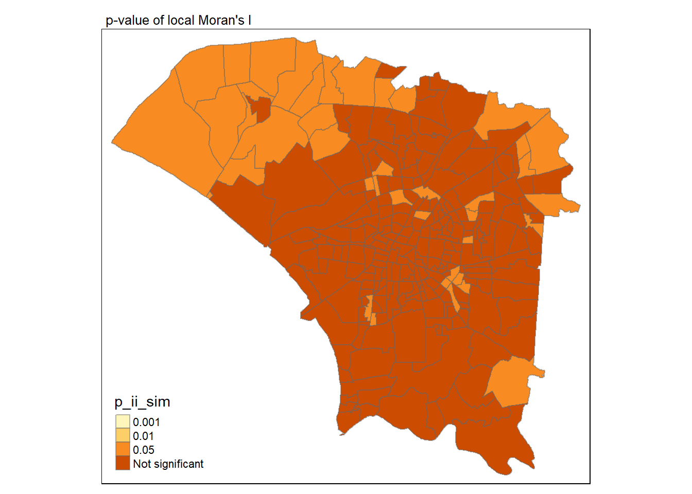
local_mapi <- tm_shape(lisa) +
tm_fill("ii") +
tm_borders(alpha=0.5) +
tm_layout(main.title = "Local Moran's I of Total Cases",
main.title.size = 0.8)
local_mapp <- tm_shape(lisa) +
tm_fill("p_ii_sim",
breaks = c(0, 0.001, 0.01, 0.05, 1),
labels = c("0.001", "0.01", "0.05", "Not significant")) +
tm_borders(alpha = 0.5) +
tm_layout (main.title = "p-value of local Moran's I",
main.title.size = 0.8)
tmap_arrange(local_mapi, local_mapp, ncol = 2)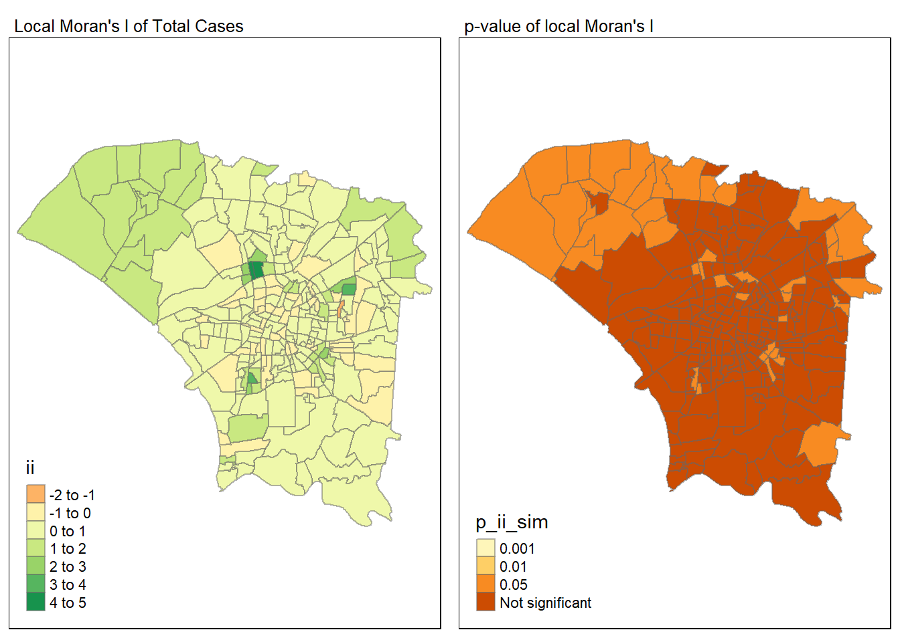
From the visualizations above, we can see that there are clusters and outliers in the dataset. We can see that there are a few areas where the p-value is less than 0.05, indicating that the clusters are statistically significant. We’ll then proceed to filter out the significant clusters and outliers.
lisa_sig <- lisa %>% filter(p_ii <0.05)
tm_shape(lisa) +
tm_polygons() +
tm_borders(alpha = 0.5) +
tm_shape(lisa_sig) +
tm_fill("mean") +
tm_borders(alpha=0.4)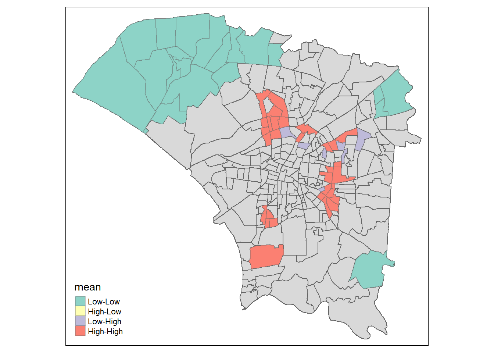
On the exterior of tainan, we notice that there are multiple Low-Low which indicates that the number of dengue cases are relatively low comapred to their neighbours. Meanwhile, in the middle of tainan, we notice that there are multiple High-High which indicates that the number of dengue cases are relatively high.
For Low-High regions, we notice that there are a few areas where the number of dengue cases are relatively low compared to their neighbours. However, they are surrounded by areas where the number of dengue cases are relatively high. This could indicate that the low number of dengue cases are outliers.
Since there are still signs of clustering, we shall proceed to perform Emerging Hotspot Analysis (EHSA) to determine the location of the clusters and where the hotspots are clusters or outliers.
We’ll reload the dengue dataset for us to get a better look at the available data.
For EHSA, we will be using VILLCODE as a unique identifier as it is the most granular level of the dataset. However, since dengue dataset does not offer VILLCODE, we will use TOWNNAME and VILLNAME as a foreign key to join the tables.
dengue <- read_csv("data/aspatial/Dengue_Daily.csv")glimpse(dengue)fil_dengue <- dengue %>% select(發病日, 最小統計區中心點X, 最小統計區中心點Y, 居住縣市,居住村里, 居住鄉鎮) %>%
rename(onset_date = 發病日, x_coordinate = 最小統計區中心點X, y_coordinate = 最小統計區中心點Y, COUNTYNAME = 居住縣市, VILLNAME = 居住村里, TOWNNAME = 居住鄉鎮)We need to get the epi weeks for dengues cases. We’ll use lubridate::epiweek() to get the epi weeks. We use epi week to start on sunday instead of isoweek which starts on monday
week_dengue <- fil_dengue %>%
mutate(week = lubridate::epiweek(onset_date))We group by week, townname and villname to get the total cases for each week, town and village.
cases_dengue <- week_dengue %>% group_by(week, TOWNNAME, VILLNAME) %>% summarize(total_cases = n())merge_tnd <- left_join(tainan_vil, cases_dengue, by = c("TOWNNAME", "VILLNAME"))merge_tnd <- merge_tnd %>% select(VILLCODE, week, total_cases)We’ll have to form a dataframe with all the possible combinations of village codes and weeks. We’ll use expand.grid() to create the dataframe.From there, replace missing cases with 0. This will give us a full grid to form our spacetime cube.
unique_villcodes <- unique(tainan_vil$VILLCODE)
unique_weeks <- rep(31:50)
all_combinations <- expand.grid(VILLCODE = unique_villcodes, week = unique_weeks)
# Convert VILLCODE to character type (if it's not already)
all_combinations$VILLCODE <- as.character(all_combinations$VILLCODE)
# Merge with the original dataframe
df_merged <- merge(all_combinations, merge_tnd, by = c("VILLCODE", "week"), all.x = TRUE)
# Replace missing total_cases with 0
df_merged$total_cases[is.na(df_merged$total_cases)] <- 0Save df_merged into rds
saveRDS(df_merged, "data/rds/df_merged.rds")df_merged <- readRDS("data/rds/df_merged.rds")Since spacetime cube requires the data to be in tibble format, we’ll convert df_merged into tibble format. We will use as_tibble() from the tibble package to convert the dataframe into tibble format.
df_merged_tb <- as_tibble(df_merged)dengue_st <- spacetime(df_merged_tb , tainan_vil,
.loc_col = "VILLCODE",.time_col = "week")is_spacetime_cube(dengue_st)[1] TRUEAmazing! We managed to create a spacetime cube. We’ll now proceed to perform emerging hotspot analysis on the spacetime cube.
dg_nb <- dengue_st %>%
activate("geometry") %>%
mutate(nb = include_self(st_contiguity(geometry)),
wt = st_inverse_distance(nb, geometry,
scale = 1,
alpha = 1),
.before = 1) %>%
set_nbs("nb") %>%
set_wts("wt")gi_stars <- dg_nb %>%
group_by(week) %>%
mutate(gi_star = local_gstar_perm(
total_cases, nb, wt)) %>%
tidyr::unnest(gi_star)Since we used Vilcode as the location, we are not able to understand which villages corresponds to which gi*. Therefore, let’s simply plot the min and max values to get a better understanding of the data.
Store gi_stars in rds
saveRDS(gi_stars, "data/rds/gi_stars.rds")gi_stars <- readRDS("data/rds/gi_stars.rds")min_gi <- min(gi_stars$gi_star)
max_gi <- max(gi_stars$gi_star)Find the villcode where the gi_star is equals to min_gi, max_gi
min_gi_vil <- gi_stars %>%
filter(gi_star == min_gi) %>%
select(VILLCODE)
max_gi_vil <- gi_stars %>%
filter(gi_star == max_gi) %>%
select(VILLCODE)
min_gi_vil# A tibble: 1 × 2
# Groups: week [1]
week VILLCODE
<int> <chr>
1 41 67000350034max_gi_vil# A tibble: 1 × 2
# Groups: week [1]
week VILLCODE
<int> <chr>
1 34 67000350040mkt_min <- gi_stars %>%
ungroup() %>%
filter(VILLCODE == min_gi_vil$VILLCODE) |>
select(VILLCODE, week, gi_star)mkt_max <- gi_stars %>%
ungroup() %>%
filter(VILLCODE == max_gi_vil$VILLCODE) |>
select(VILLCODE, week, gi_star)ggplot(data = mkt_min,
aes(x = week,
y = gi_star)) +
geom_line() +
theme_light()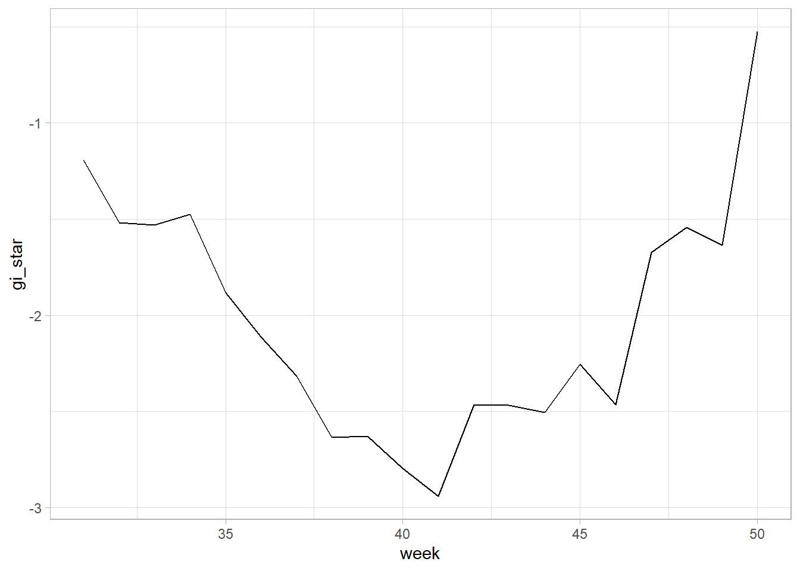
ggplot(data = mkt_max,
aes(x = week,
y = gi_star)) +
geom_line() +
theme_light()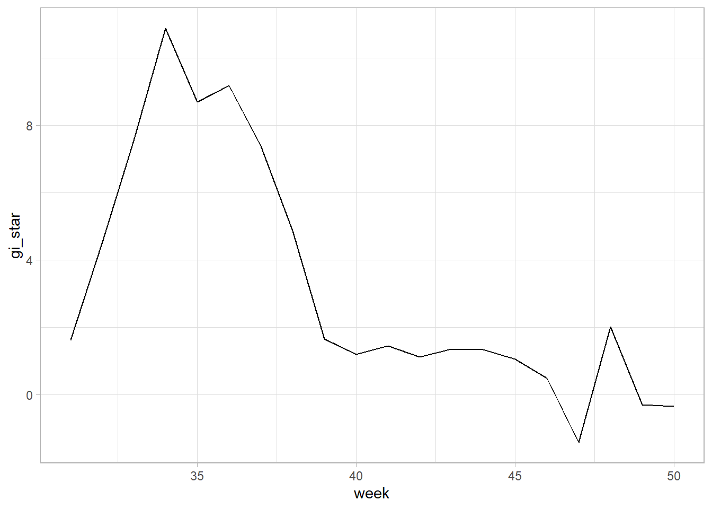
Let’s plot them together to gauge how the min and max values defer in tainan.
ggplot() +
geom_line(data = mkt_min, mapping = aes(x = week, y = gi_star, color = "Min")) +
geom_line(data = mkt_max, mapping = aes(x = week, y = gi_star, color = "Max")) +
labs(x = "Week", y = "GiStar Value",
title = "GiStar Min and Max Values",
color = "Villages")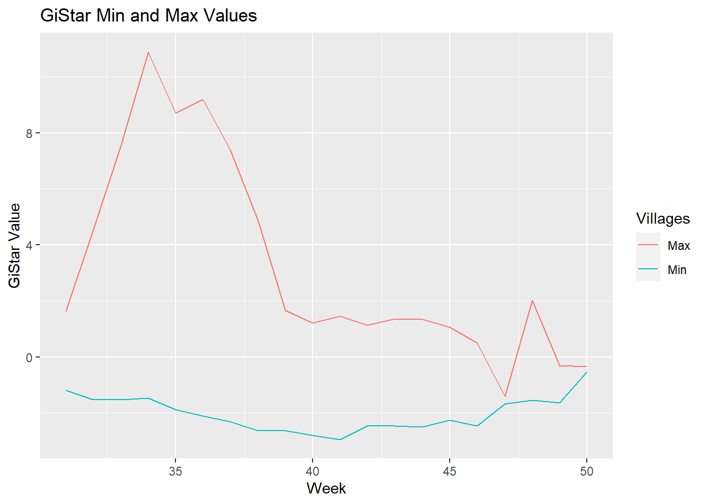
We can see that the min and max values of gi* are quite different. The min value of gi* is relatively stable throughout the weeks while the max value of gi* fluctuates quite a bit. Eventually, they both converge back close to 0.
We can replicate the above calculation for the entire dataset using group_by of dplyr package.
ehsa <- gi_stars %>%
group_by(VILLCODE) %>%
summarise(mk = list(
unclass(
Kendall::MannKendall(gi_star)))) %>%
tidyr::unnest_wider(mk)We arrange it to show significant emerging hot/cold spots.
emerging <- ehsa %>%
arrange(sl, abs(tau)) %>%
slice(1:5)Lastly, we will perform EHSA analysis by using emerging_hotspot_analysis() of sfdep package. It takes a spacetime object x (i.e. GDPPC_st), and the quoted name of the variable of interest (i.e. GDPPC) for .var argument. The k argument is used to specify the number of time lags which is set to 1 by default. Lastly, nsim map numbers of simulation to be performed.
ehsa <- emerging_hotspot_analysis(
x = dengue_st,
.var = "total_cases",
k = 1,
nsim = 99
)saveRDS(ehsa, "data/rds/ehsa.rds")ehsa <- readRDS("data/rds/ehsa.rds")ggplot(data = ehsa,
aes(x = classification)) +
geom_bar()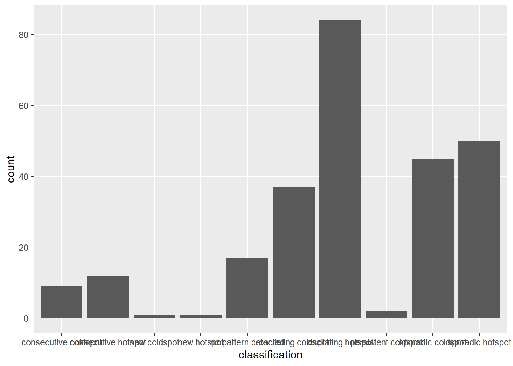
tn_ehsa <- tainan_vil %>%
left_join(ehsa,
by = join_by(VILLCODE == location))Tmap functions will be used to plot a categorical choropleth map by using the code chunk below.
ehsa_sig <- tn_ehsa %>%
filter(p_value < 0.05)
tmap_mode("plot")
tm_shape(tn_ehsa) +
tm_polygons() +
tm_borders(alpha = 0.5) +
tm_shape(ehsa_sig) +
tm_fill("classification") +
tm_borders(alpha = 0.4)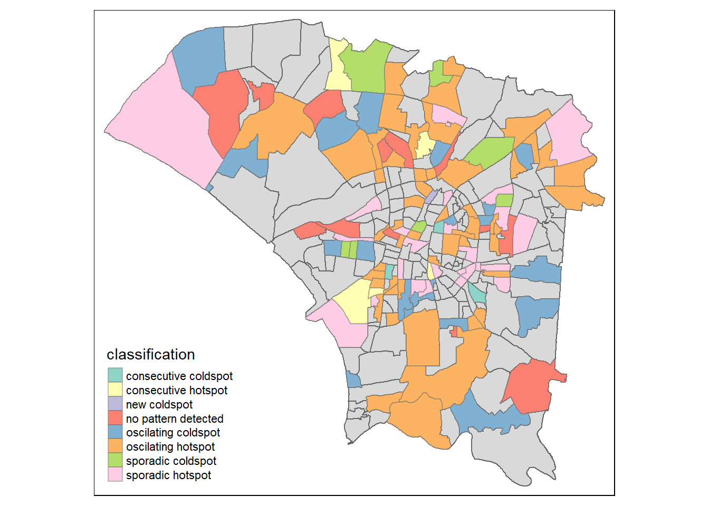
From the visualisation above, we can see that there are a few areas where the p-value is less than 0.05, indicating that the clusters are statistically significant.
We’ll reference the table below to understand what the classifications mean. Source: https://pro.arcgis.com/en/pro-app/2.8/tool-reference/space-time-pattern-mining/learnmoreemerging.htm
| Pattern Name | Definition |
|---|---|
| Consecutive Cold Spot | A location with a single uninterrupted run of statistically significant cold spot bins in the final time-step intervals. The location has never been a statistically significant cold spot prior to the final cold spot run and less than ninety percent of all bins are statistically significant cold spots. |
| Consecutive Hot Spot | A location with a single uninterrupted run of statistically significant hot spot bins in the final time-step intervals. The location has never been a statistically significant hot spot prior to the final hot spot run and less than ninety percent of all bins are statistically significant hot spots. |
| New Cold Spot | A location that is a statistically significant cold spot for the final time step and has never been a statistically significant cold spot before. |
| Oscillating Cold Spot | A statistically significant cold spot for the final time-step interval that has a history of also being a statistically significant hot spot during a prior time step. Less than ninety percent of the time-step intervals have been statistically significant cold spots. |
| Oscillating Hot Spot | A statistically significant hot spot for the final time-step interval that has a history of also being a statistically significant cold spot during a prior time step. Less than ninety percent of the time-step intervals have been statistically significant hot spots. |
| Sporadic Cold Spot | A location that is an on-again then off-again cold spot. Less than ninety percent of the time-step intervals have been statistically significant cold spots and none of the time-step intervals have been statistically significant hot spots. |
| Sporadic Hot Spot | A location that is an on-again then off-again hot spot. Less than ninety percent of the time-step intervals have been statistically significant hot spots and none of the time-step intervals have been statistically significant cold spots. |
| No Pattern Detected | Does not fall into any of the hot or cold spot patterns defined below. |
In conclusion, we have successfully performed global spatial autocorrelation analysis, local spatial autocorrelation analysis and emerging hotspot analysis on the distribution of dengue fever in Tainan City, Taiwan. We have discovered that the distribution of dengue fever outbreak at Tainan City, Taiwan are spatially dependent. We have also detected clusters and outliers, and the emerging hot spot/cold spot areas.
From the EHSA analysis, we have identified the following significant emerging hot/cold spots: Consecutive Cold Spot, Consecutive Hot Spot, New Cold Spot, Oscillating Cold Spot, Oscillating Hot Spot, Sporadic Cold Spot, Sporadic Hot Spot and No Pattern Detected. Majority of the areas are oscillating hot spots and sporadic hot spots. These suggests that the dengue fever outbreak in Tainan City, Taiwan are not consistent and are sporadic in nature. For consecutive hotspots,
The results of the analysis can be used to inform public health officials and policy makers to allocate resources and implement targeted interventions to control the spread of dengue fever in Tainan City, Taiwan.
After Take-home exercise 2, I further realised the importance of data wrangling and data cleaning. It is important to ensure that the data is clean and in the right format before performing any analysis. Using a function is simple, but preparing a dataset for the function to use is not. I need to be more careful in the future to ensure that the data is in the right format before performing any analysis.
Overall, with the QnAs from Piazza, I managed to work ma way through the exercise and understand the concepts of spatial autocorrelation and emerging hotspot analysis. I am looking forward to the next exercise to further improve my skills in spatial analysis.